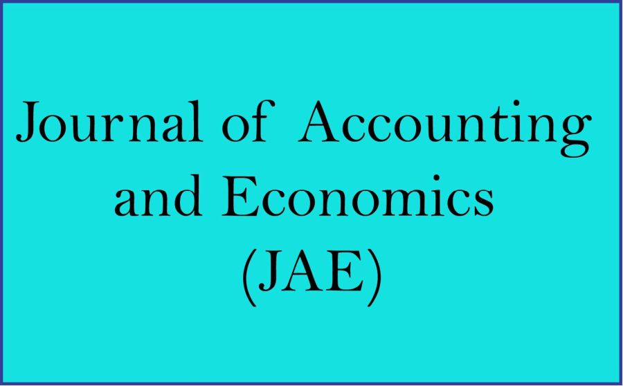

City University of Hong Kong
 |
Publication and Academic Workshops Please click the link to see the list of top-tier publications. Please click the link to see the list of seminars and brown bag workshops held in 2020. |
 |
College of Business research ranked No. 1 in the Asia-Pacific region in 2019, according to the University of Texas at Dallas (UTD) Top 100 Business School Research Rankings™ |
|  | Paper accepted by the Journal of Accounting and Economics (JAE) – Dr Xindong (Kevin) Zhu |
Professor Jeong-Bon Kim’s co-authored article titled “Short-Sale Constraint and Stock Price Crash Risk” was featured in Research Briefs in Economic Policy (20 January 2020) published by an influential U.S. public policy organization, Cato Institute. [more] |
|
Publication in Strategic Management Journal (SMJ) – Dr Yangxin Yu |
|
 |
Hong Kong Ph.D. Fellowship Scheme (2020/21 Exercise): Repeated Success |
 |
Road to Success of the Top Eight Teams of the ACCA and CFA Institute Business Competition 2019-20 |
 |
McDonough Business Strategy Challenge (MBSC) 2020 |
 |
CB Double Major Information Week on 6 – 9 April 2020 - Student Sharing from Edmund Ho - AC Double Major Information Week |